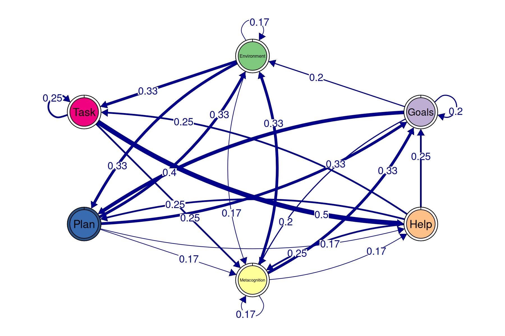
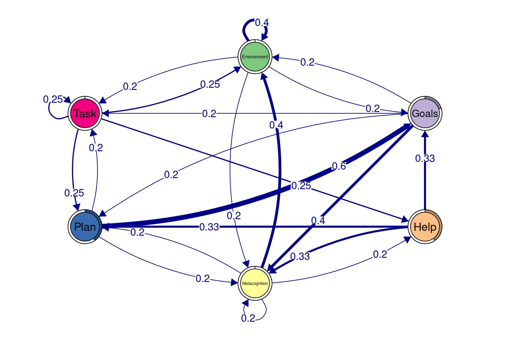
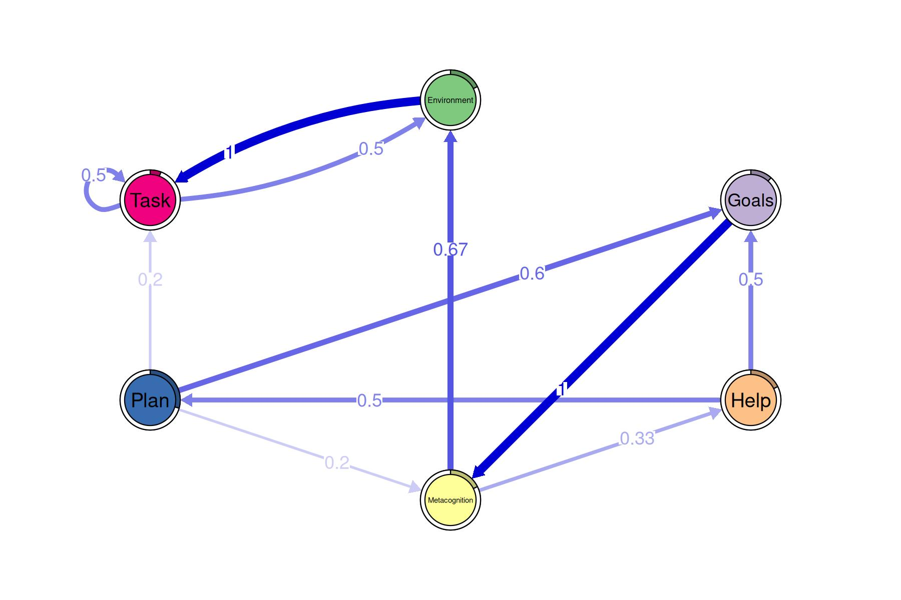
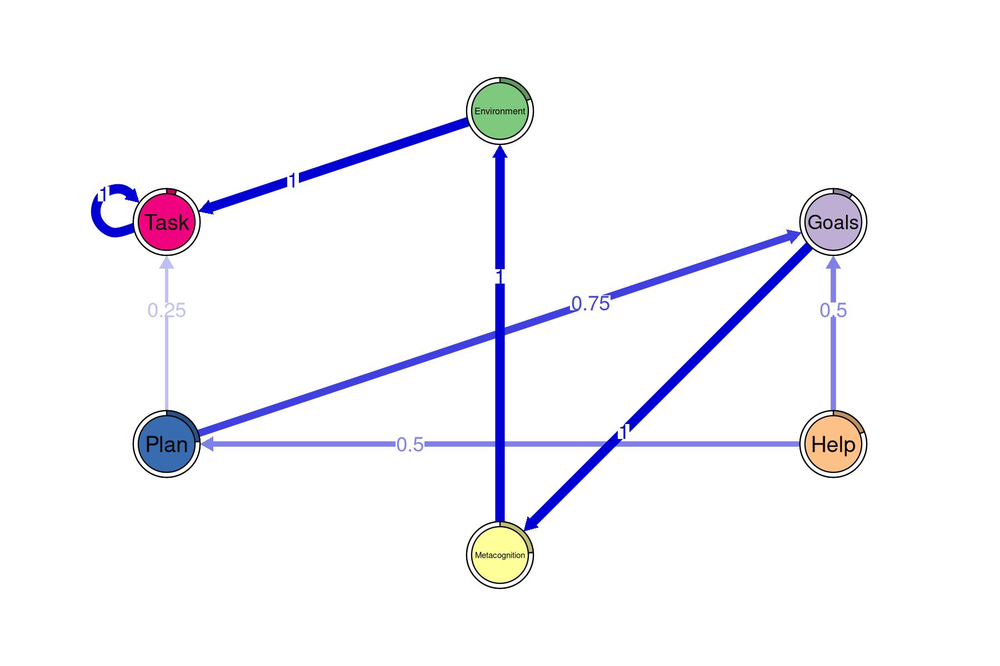
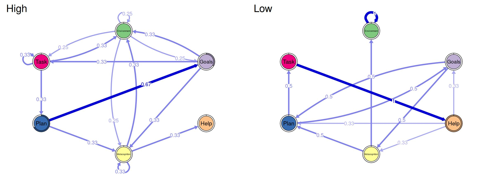

The tna package accepts sequence data (a
stslist object created by the TraMineR
package), a wide data.frame where each row represents a
sequence and each column represents a timepoint, or a transition matrix.
When our data does not follow any of those formats, we can use the
prepare_data function from tna to get it in
the right shape.
Let’s start by creating an example dataframe containing event logs
where each row represents an action performed by a user at
a specific timestamp. The achievement column
indicates whether the user was associated with high or low
achievement.
df <- tribble(
~user, ~timestamp, ~event, ~achievement, ~order,
2, "2025-02-27 18:01:32", "Plan", "High", 1,
2, "2025-02-27 18:03:32", "Goals", "High", 2,
1, "2025-02-27 18:08:32", "Goals", "High", 1,
3, "2025-02-27 18:15:32", "Plan", "High", 1,
5, "2025-02-27 18:16:32", "Help", "Low", 1,
3, "2025-02-27 18:19:32", "Goals", "High", 2,
5, "2025-02-27 18:19:32", "Plan", "Low", 2,
2, "2025-02-27 18:20:32", "Environment", "High", 3,
1, "2025-02-27 18:25:32", "Task", "High", 2,
4, "2025-02-27 18:25:32", "Help", "Low", 1,
5, "2025-02-27 18:26:32", "Task", "Low", 3,
3, "2025-02-27 18:32:32", "Metacognition", "High", 3,
4, "2025-02-27 18:33:32", "Goals", "Low", 2,
1, "2025-02-27 18:36:32", "Environment", "High", 3,
1, "2025-02-27 18:44:32", "Task", "High", 4,
1, "2025-02-27 18:45:32", "Task", "High", 5,
5, "2025-02-27 18:46:32", "Help", "Low", 4,
1, "2025-02-27 19:01:32", "Plan", "High", 6,
2, "2025-02-27 19:06:32", "Environment", "High", 4,
4, "2025-02-27 19:06:32", "Plan", "Low", 3,
1, "2025-02-27 19:13:32", "Metacognition", "High", 7,
3, "2025-02-27 19:13:32", "Metacognition", "High", 4,
4, "2025-02-27 19:15:32", "Goals", "Low", 4,
4, "2025-02-27 19:20:32", "Metacognition", "Low", 5,
4, "2025-02-27 19:20:32", "Environment", "Low", 6,
5, "2025-02-27 19:23:32", "Metacognition", "Low", 5,
3, "2025-02-27 19:25:32", "Help", "High", 5,
2, "2025-02-27 19:27:32", "Metacognition", "High", 5,
2, "2025-02-27 19:33:32", "Environment", "High", 6,
4, "2025-02-27 19:46:32", "Environment", "Low", 7,
5, "2025-02-27 19:49:32", "Plan", "Low", 6,
2, "2025-02-27 19:55:32", "Goals", "High", 7
)When we are interested in the whole dataset as a single sequence, and
the data is already ordered chronologically, we just need to specify the
action column, which in this case is called
event. We can pass the result of calling
prepare_data directly to the tna function to
create a tna model.
by_classroom <- prepare_data(df, action = "event")
tna_by_classroom <- tna(by_classroom)
plot(tna_by_classroom)
When we want to create a sequence per user, in addition to
action, we need to specify the actor column,
which in this case is user. If the data is already ordered,
we do not need to provide any additional arguments. If it is not
ordered, we can provide a column to order the data by, in this case
order.
by_user <- prepare_data(df, actor = "user", action = "event", order = "order")
tna_by_user <- tna(by_user)
plot(tna_by_user)
If rather than the order we only have the timestamps, we can provide
it as time column. By default, events happening less than
15 minutes apart will be grouped in the same sequence, while events that
happen after a longer time, will mark the start of a new sequence (i.e.,
session). If both time and order are provided,
the data will be first ordered by time, and in case of a
tie, by order.
by_session <- prepare_data(df, actor = "user", time = "timestamp", action = "event")
tna_by_session <- tna(by_session)
plot(tna_by_session)
If we want to customize the time gap that marks the start of a new
sequence, we can do so by customizing the time_threshold
argument (in minutes).
by_session_custom <- prepare_data(
df, actor = "user", time = "timestamp",
action = "event", time_threshold = 10 * 60 # 10 minutes
)
tna_by_session_custom <- tna(by_session_custom)
plot(tna_by_session_custom)
Another advantage of using prepare_data prior to
constructing the tna model is that we get to keep other
variables of the data and use them in our analysis. For instance, we can
use group_tna to create a tna model by
achievement group just by passing the result of
prepare_data as a first argument, and indicating the name
of the column in the data that we want to group by.
